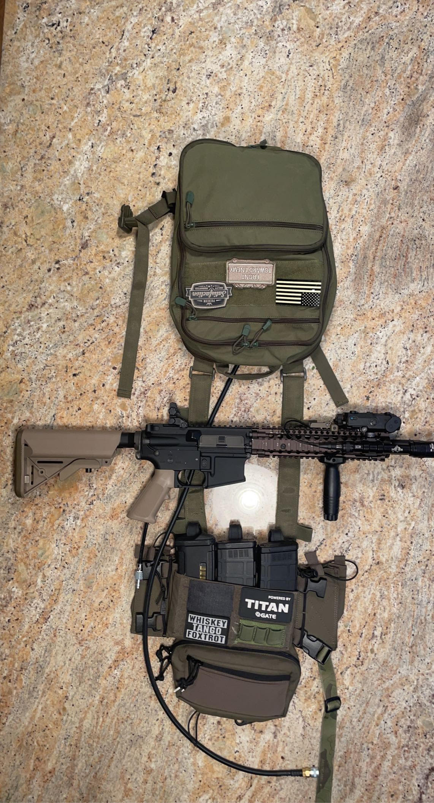
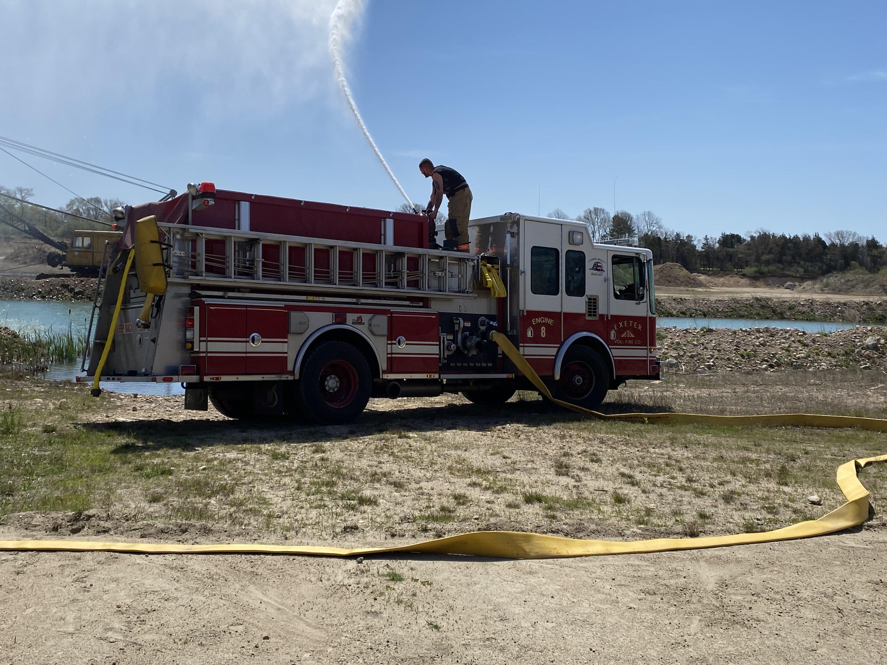
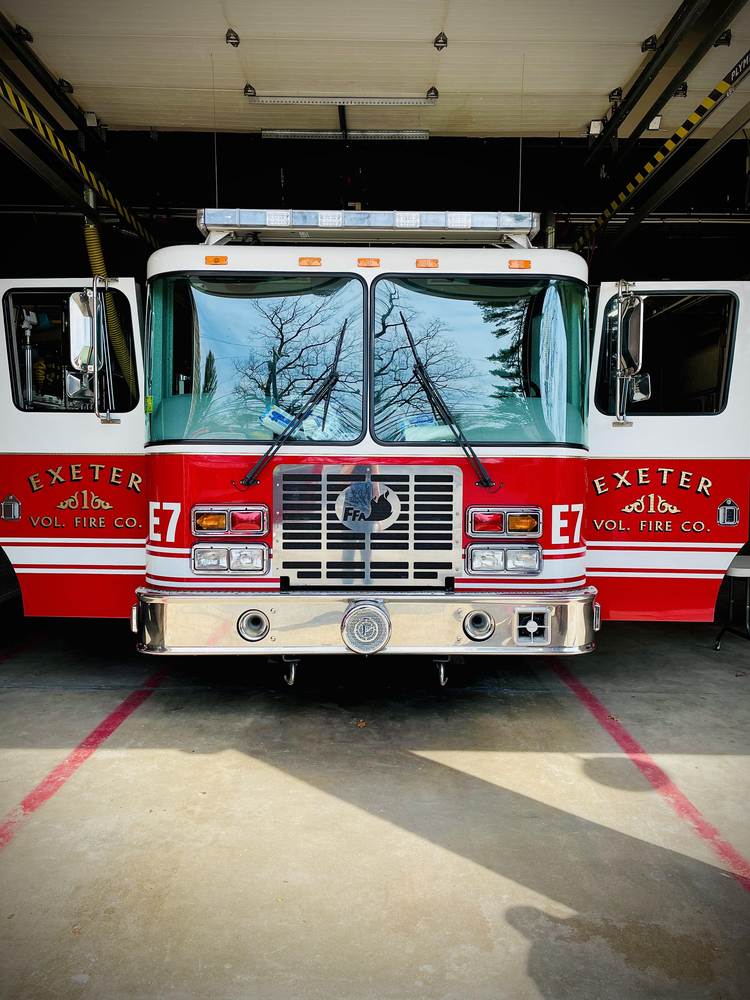

Hello, I am Epsilon. I wrote this website for my Computer Science class. I am a student at the University of Rhode Island and I am in my Freshman Year.
I am 18 years old, and my name is Malcolm Rodgers . If you are wondering where the name "Epsilon" came from, I will explain.
The callsign "Epsilon" came from playing video games online, and playing Airsoft. Speaking of which, Airsoft is one of my hobbies and a sport that I play.
Airsoft is a tactical, team based, objective based sport that involved players dressed in tactical gear that shoot at eachother with realistic looking but relatively harmless pellet guns.
These pellets are made of plastic and travel anywhere from 200 feet per second all the way up to and beyond 500 feet per second. All of my airsoft weapons are custom built by me.
I learned how to build Airsoft guns partially because I was bored, but also because I wanted to have very high performance, custom equipment to play with. The rifle pictured in Fig. 1
is my custom Mk. 18 Polarstar. Polarstar is a company that designed a propulsion system based on nothing but air.
The gun is based on the military Mk. 18 SOPMOD rifle. The handguard is made for the real Mk. 18 but has been adapted to fit the Airsoft gun that I have.
The gun itself is worth upwards of one thousand dollars on the market. Part of what that makes it special is the Polarstar "Jack" engine inside of it.
Polarstar invented a revolutionary propulsion system that uses nothing but air. The air is fed through a line that attaches to a tank on your back, and the gun.
If you look closely at the grip of the gun, there is a quick disconnect fitting coming out of it. This allows me to hook up to my backpack and actually use the gun.
The system itself uses solenoid valves that are powered by a 7.4v battery and a FCU (fire control unit). This allows me to program the gun to do a multitude of things.
Some of the things I can do include changing the RPS (rounds per second), precocking, and burst fire.
Traditional Airsoft guns use batteries to turn a set of 3 gears using a motor. I have both an HPA Polarstar and an AEG (Airsoft Electric Gun) for rifles.
Aside from airsoft, I am also a volunteer firefighter out of Exeter Vol. Fire Co. District 1 and Kingston Fire District. The Kingston Fire District is
right here on the URI campus. I originally started volunteering for my high school senior project. The senior project at my high school was intended to
introduce kids to a new industry and allow them to take advantage of their career interests and see if the career they thought about is for them.
Personally, I have wanted to be a firefighter long before I could walk. It is the one of the only things that I have ever truly wanted to do with my life.
In my humble opinion, it is the most rewarding and best job in America today. I love firefighting more than anything and I find joy in the work I do.
To me, firefighting is not just a job, it hardly feels like work at all because I love it that much, it is a lifestyle, a family, and an honor to protect the community.
If you were to ask me what my favorite part about being a firefigher is, I would probably tell you that it is the gear, or the trucks, or the family you make.
But in reality, I am not really sure why I love it so much or what my favorite part about it is.
Eventually, I would like to turn firefighting into a full time career.
Go to tree.html .